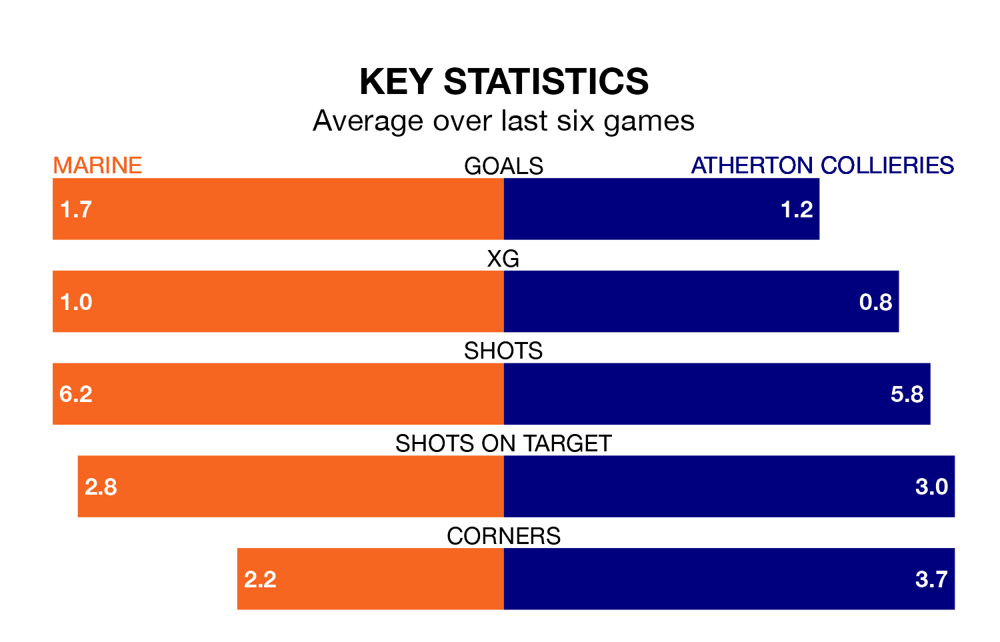

Struggling Atherton Collieries face Marine away at the Marine Travel Arena on Saturday looking to build on a win in their last league outing.
After securing all three points with a 1-0 victory over Stafford Rangers on April 13, Atherton Collieries sit 21st in the Northern Premier League.
They travel to play a Marine side third in the standings, who also won their last match, 3-0 against Workington.
With 81 goals in 39 games so far this season, Marine are the league's second-highest scorers with 2.1 goals per game. And they are conceding fewer than average, letting in 44 goals at a rate of 1.1 per game.
Atherton Collieries, meanwhile, are below average scorers, with 1.3 goals per game, compared to a league average of 1.6. They have conceded 2.4 goals per game.
In the last 10 years, Marine and Atherton Collieries have played each other on six occasions. Marine won five of them and they drew once.
On average, Marine scored 2.7 goals and Atherton Collieries 0.2 in those matches.
Their last meeting was on December 19, when Marine won 5-0 away.
The home team are in fantastic form in the Northern Premier League, with five wins and one loss from their last six games.
With two wins and four losses over that period, the visitors' form is much worse – they have taken six points from 18, compared to Marine's 15.
Updated: 15:40 (UTC), 18/04/24